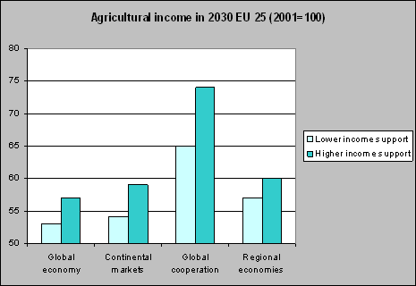
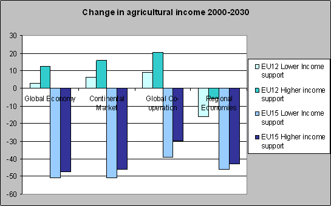
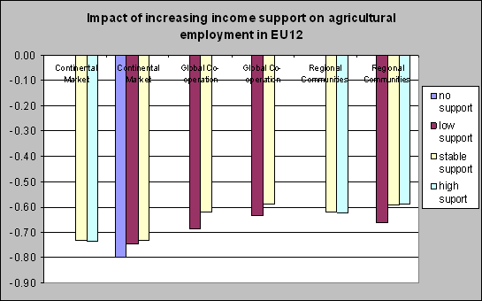
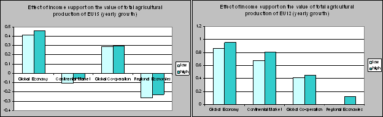
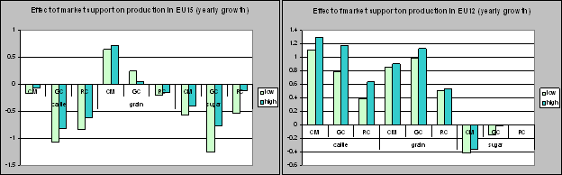
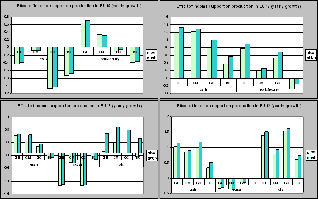
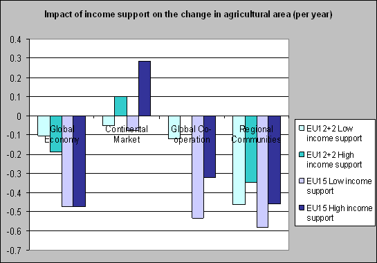

Highlights
- Agricultural income will decrease significantly in all scenarios
- Income support will cause a rise of agricultural income
- Market support has a lower impact on agricultural income
- Oppositely of decreasing trend in the EU15, the EU12 shows an increase of agricultural income due to production growth and the accession effect
- In three out of four scenarios, income support will sustain agricultural land use by about 3 to 10% over a 30 year period.

Figure 1. Agricultural income in 2030 as index
of 2001.*
The total agricultural income decreases significantly in all scenarios over the coming 30 years. The main reason is the steady fall of product prices. Income support (domestic support) will cause a clear increase in agricultural income (figure 1). A higher market support (export subsidies and import tariffs) has a much smaller effect on agricultural incomes (figure 2).

Figure 2. Change in agricultural income as influenced
by market support*
There is a distinct difference in agricultural income between the EU15 and the
EU12 (figure 3). The agricultural income will rise in the EU12, while the EU15
faces a marked drop in income. The main reasons for the increase in the EU12
are the increased production and the introduction of the CAP in 2004. Since
the agricultural income of the EU15 is about 90% of the EU27, it dominates the
overall results.

Figure 3. Influence of lower and higher income support
on agricultural income in EU12 and EU15.*
Figure 4 shows the impact of increasing income support on agricultural employment and sectoral value added in EU12. The difference between no income support and low income support or between low income support and stable income support is between 0.05% and 0.1%. Increasing current income support does not reduce decrease of agricultural employment in EU12. The impact on agricultural income shows the same trend.

Figure 4. Impact of increasing income support on
agricultural employment in EU12
Agricultural production is especially influenced by macro-economic developments. The differences in agricultural production growth between scenarios are much larger than the impact of market support or income support (figure 5). Growth in total agricultural production is higher in EU12 than EU15, especially in Global economy and Global co-operation.
Figure 5. Impact of support on yearly growth of total agricultural production in the EU12 and EU15*
Impact on protected commodities
Increasing market support has especially impact on protected commodities (Figure 6).
In EU12 production of cattle, grain and sugar is mostly influenced, while in EU15
production of oil crops is also sensitive to market support. Sugar production shows
the largest differences, due to the extent of protection in current policies. In all
scenarios the impact of market support is about the same size.

Figure 6. Impact of market support on production
of several commodities(Continental Markets = Continental Markets, Global Cooperation = Global Co-operation,
Regional Communities = Regional Communities)*
Increasing domestic support in EU12 affects the production of cattle, crops, grain, pork & poultry and oil crops in a positive way (Figure 7). In the EU15 the impact of domestic support is less. The production of cattle, grain and oil crops is influenced in this region.

Figure 7. Figure 7. Impact of domestic income support on
production of several commodities (Continental Markets = Continental Markets, Global Cooperation = Global Co-operation,
Regional Communities = Regional Communities*

Figure 8. Impact of income support on agricultural landuse*
Impact on land use
In three out of four scenarios, income support will sustain agricultural land by 3 to 10% in 30 years (Figure 8).
The effect is most marked in the Continental Market scenario. Decrease of agricultural land
use in EU12+2 in the Global Economy scenario is especially due to decrease of agricultural land
in Bulgaria and Romania. The effect of income support in the EU12 on agricultural land use is positive.
Impact of market support on agricultural land use is limited.
* Domestic income support: Low = no support, high = decreasing support (Global Economy and Global Co-operation) or low = decreasing support, high=stable support (Continental market and Regional communities); Market support: Low = liberalization, high = decreasing support (Global Co-operation) or low = decreasing support, high = constant support (Continental market and Regional communities).